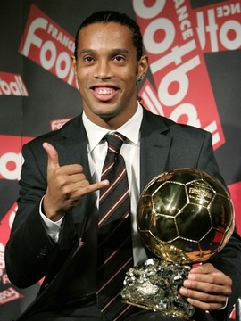

Ronaldo de Assis Moreira
Meia-atacante
SOBRE
Consagrado jogador de futebol brasileiro, eleito o melhor do mundo pela FIFA por dois anos consecutivos, em 2004 e 2005. Campeão do mundo pela Seleção Brasileira na Copa de 2002.
 (12) 9 3456-7890
(12) 9 3456-7890 r10obruxo@gmail.com
r10obruxo@gmail.com @ronaldinho
@ronaldinhoCATEGORIAS DE BASE
- 1987–1998 Grêmio Football Porto-Alegrense
CLUBES
- 1998–2001 Grêmio Football Porto-Alegrense
- 2001–2003 Paris Saint-Germain Football Club
- 2003–2008 Futbol Club Barcelona
- 2008–2010 Associazione Calcio Milan
- 2011–2012 Clube de Regatas do Flamengo
- 2012–2014 Clube Atlético Mineiro
- 2014–2015 Querétaro Fútbol Club
- 2015 Fluminense Football Club
TÍTULOS
- 1999 - Campeonato Gaúcho
- 1999 - Copa Sul
- 2001 - Copa Intertoto da UEFA
- 2005-06 - Liga dos Campeões da UEFA
- 2004-05, 2005-06 - La Liga
- 2005, 2006 - Supercopa da Espanha
- 2003–04, 2004–05, 2006–07 - Copa Cataluña
- 2010-11 - Série A
- 2011 - Campeonato Carioca
- 2013 - Campeonato Mineiro
- 2013 - Copa Libertadores da América
- 2014 - Recopa Sul-Americana
ESTATÍSTICAS
- Jogos: 336
- Gols: 356